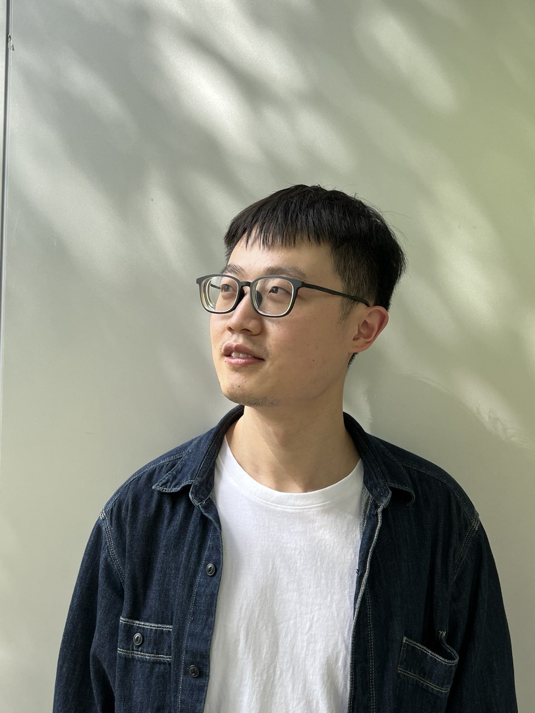
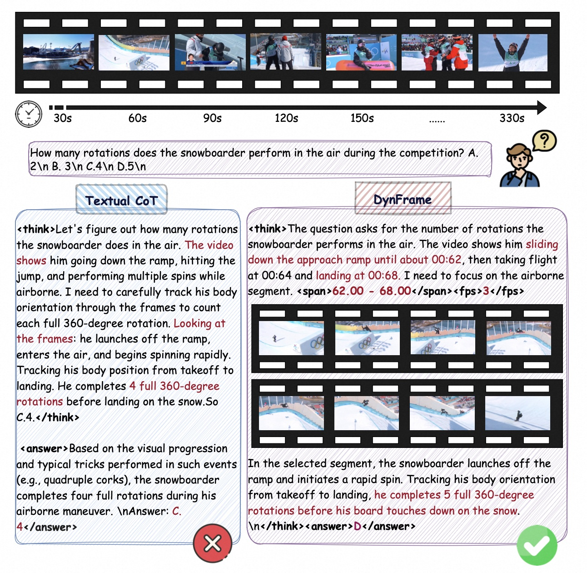
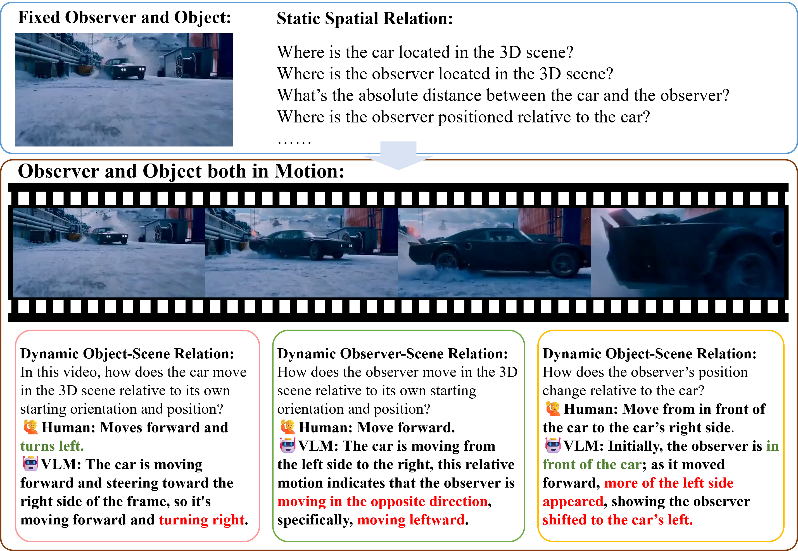
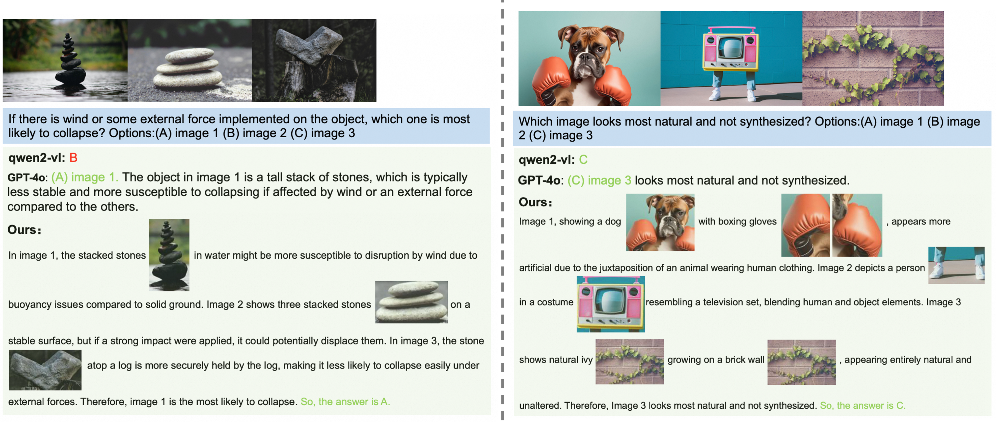
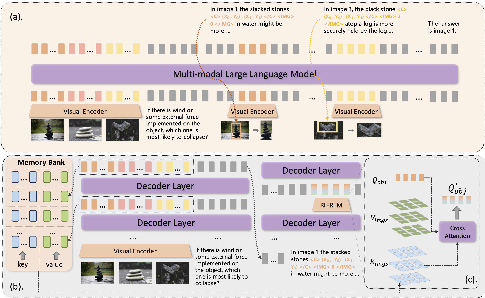
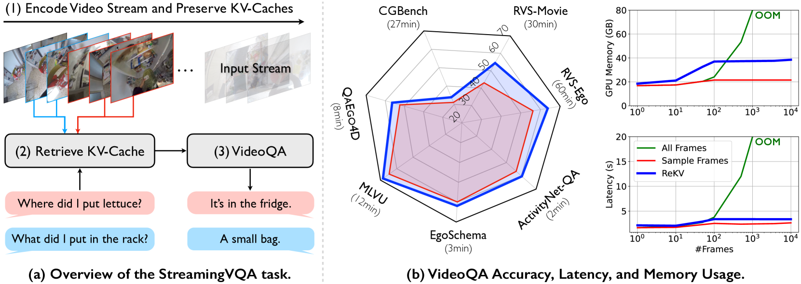
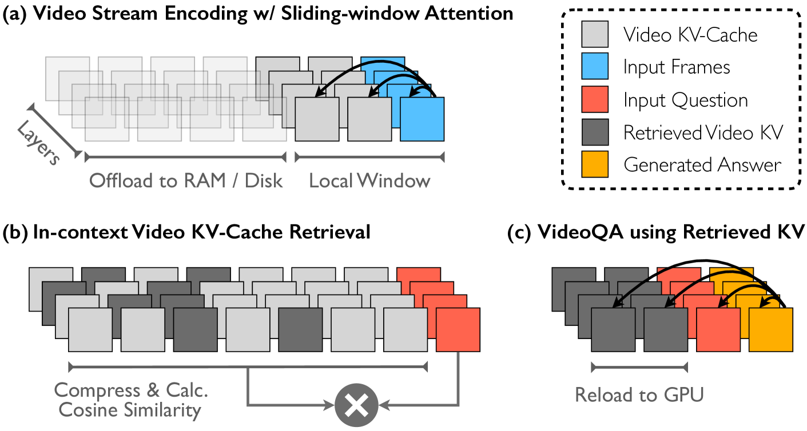
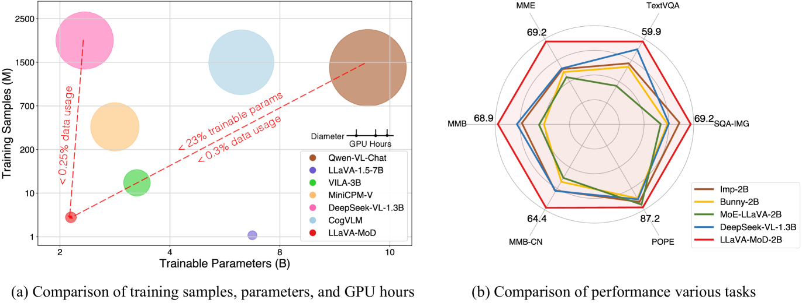
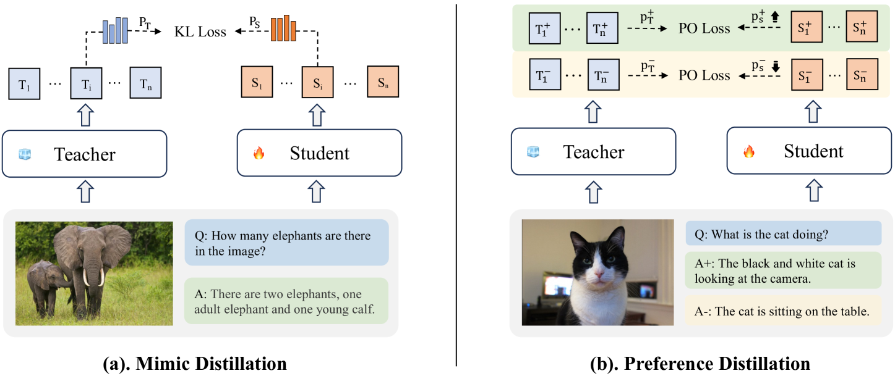
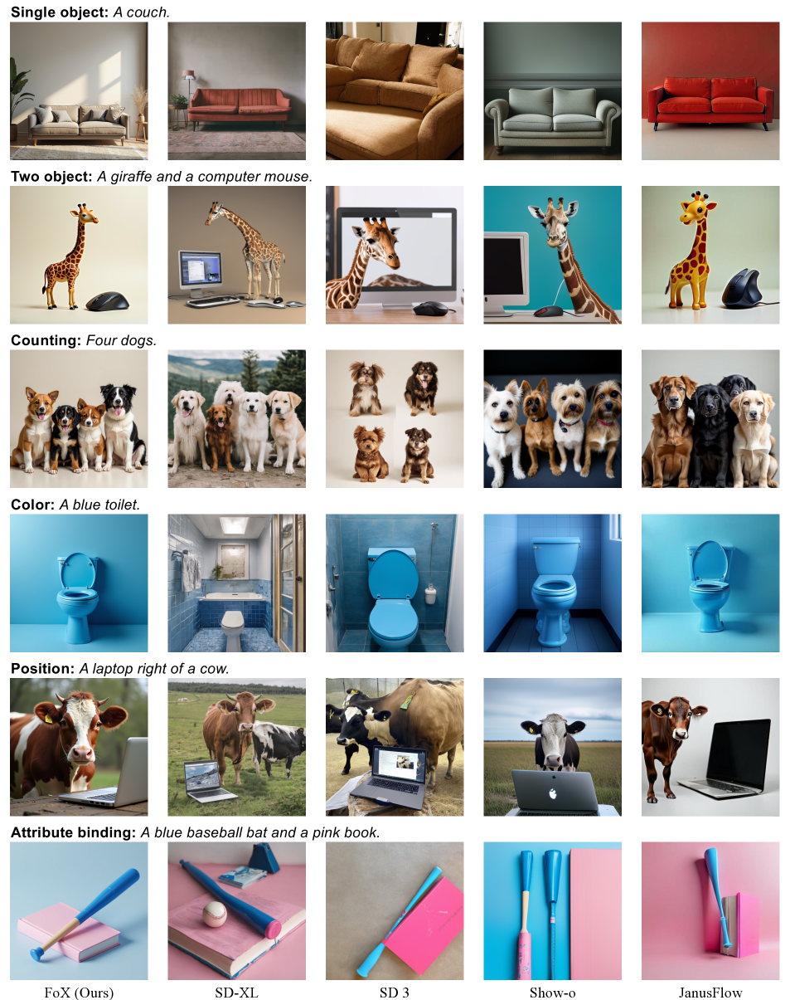

Guanghao Zhang（张广昊）
I am a researcher at Alibaba Group. I received my M.S. degree from the Institute of Automation, Chinese Academy of Sciences (CASIA) in 2022. My research interests include multimodal large language models, video understanding, reasoning & retrieval, and knowledge distillation.
Latest
News
Research
Selected Publications

arXiv Preprint, 2026
DynFrame: Adaptive Reasoning-Driven Multimodal Framework with Dynamic Frame Augmentation for Complex Video Understanding
An end-to-end framework that emits temporal span and sampling density as native tokens, enabling learnable frame retrieval within a single autoregressive reasoning pass. SD-GRPO provides segment-specific credit assignment for retrieval and answer generation.

arXiv Preprint, 2025
DSI-Bench: A Benchmark for Dynamic Spatial Intelligence
A benchmark with ~1,000 dynamic videos and 1,700+ annotated questions covering nine decoupled motion patterns, designed to evaluate VLMs' reasoning about observer and object motion in dynamic 3D scenarios.


AAAI 2026
CMMCoT: Enhancing Complex Multi-Image Comprehension via Multi-Modal Chain-of-Thought and Memory Augmentation
A multi-step reasoning framework for complex multi-image understanding that constructs interleaved multimodal reasoning chains with visual region tokens and incorporates test-time memory augmentation to expand reasoning capacity.


ICLR 2025
ReKV: Streaming Video Question-Answering with In-context Video KV-Cache Retrieval
A training-free approach for streaming video QA that stores per-block KV-Cache on CPU and retrieves relevant visual context on-the-fly, enabling continuous video comprehension without reprocessing.



ECCV 2026
Mint: Multi-modal Chain of Thought in Unified Generative Models for Enhanced Image Generation
A unified generative model featuring Functionality-oriented eXperts (FoXperts) and Multimodal Chain of Thought (MCoT) that emulates a human artistic workflow—planning, acting, reflection, and correction—to tackle complex compositional image generation beyond direct T2I.
Career
Experience
Community
Academic Services
- Conference Reviewer: ECCV, CVPR, NeurIPS, ICLR, AAAI